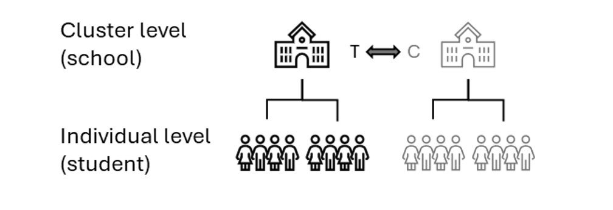
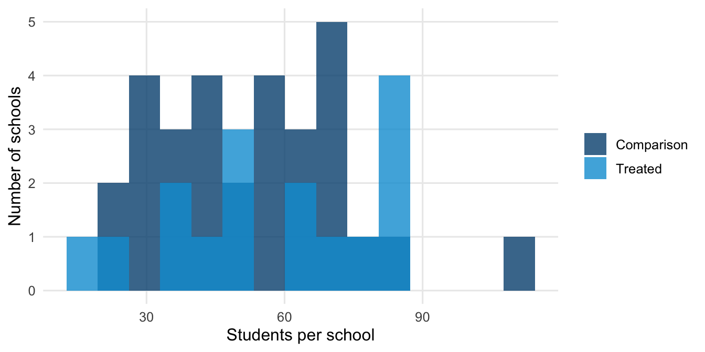
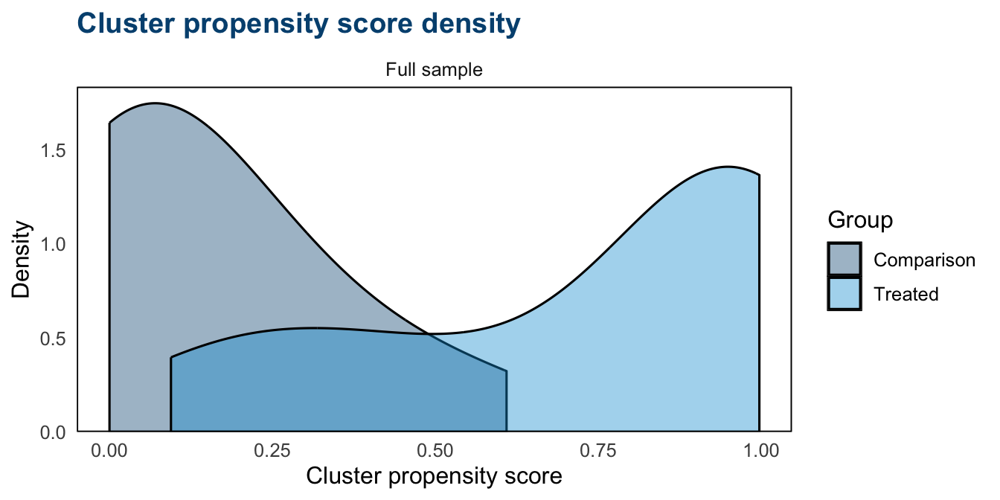
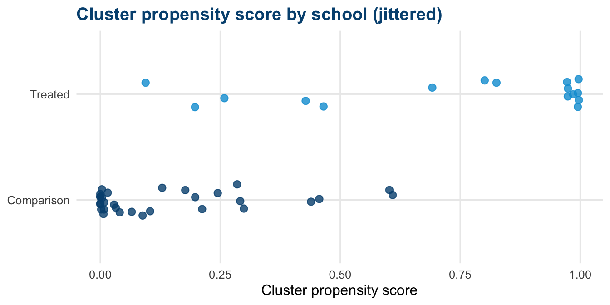
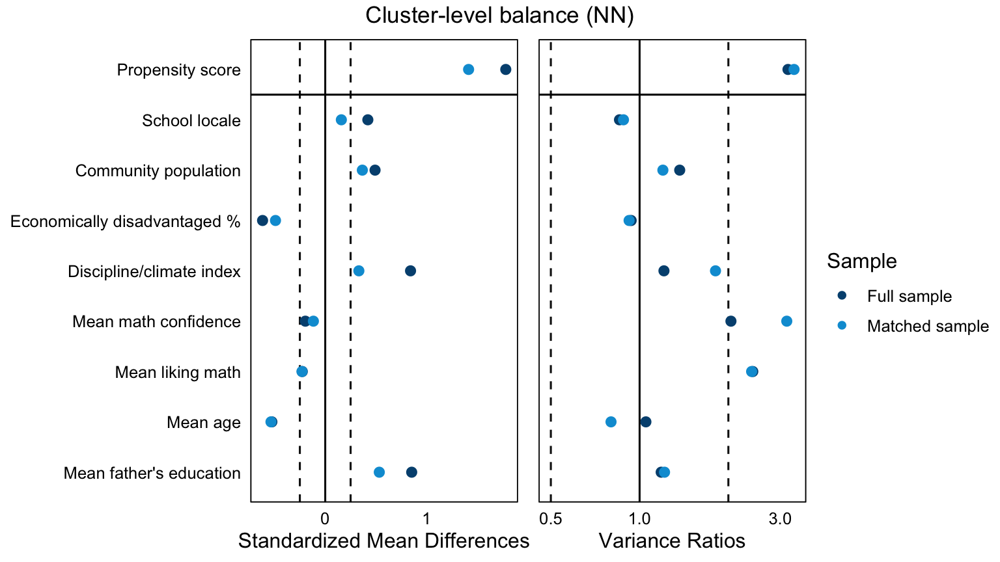
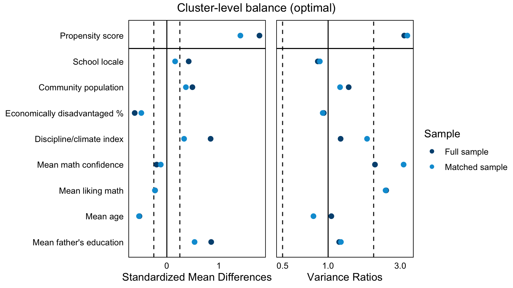
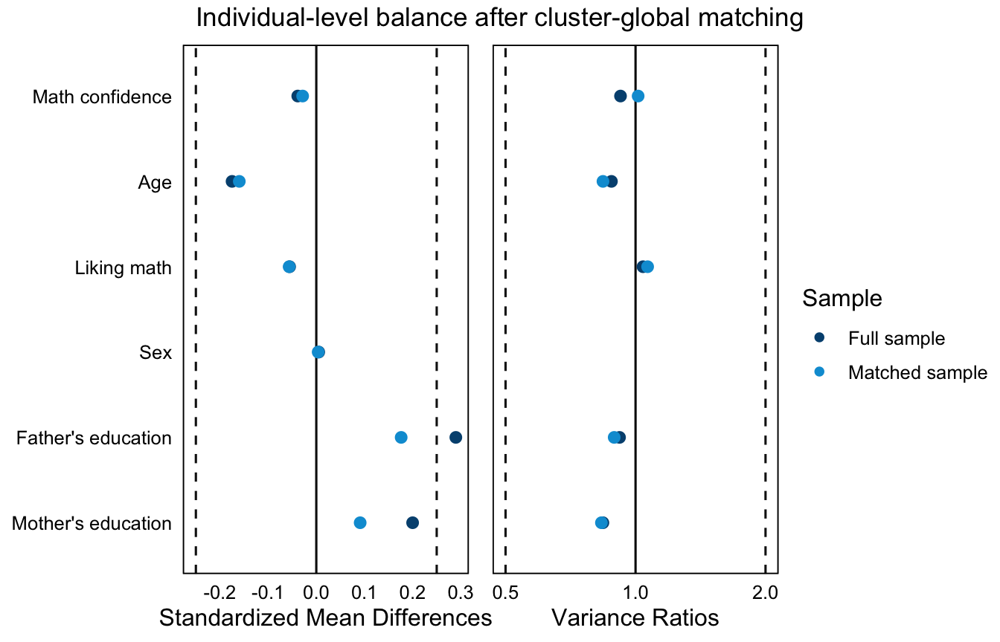
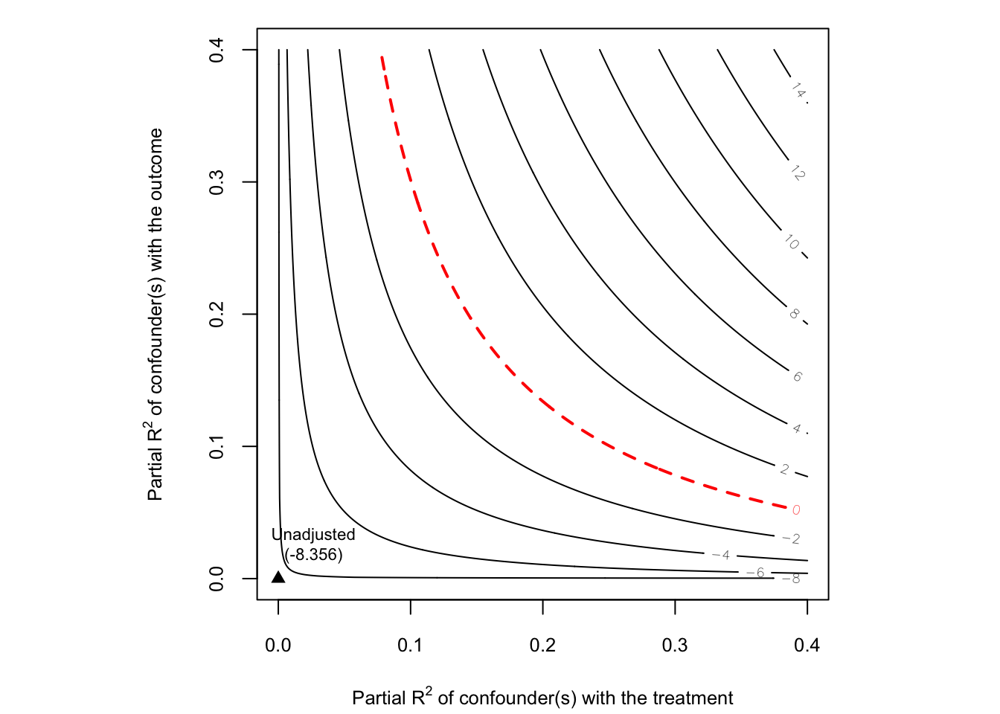

# ── Packages ──────────────────────────────────────────────────────────────────
library(tidyverse)
library(MatchIt)
library(matchMulti)
library(cobalt)
library(lme4)
library(marginaleffects)
library(sensemakr)
library(performance)
library(gt)
# ── AIR brand palette ─────────────────────────────────────────────────────────
air_navy <- "#00507F"
air_blue <- "#009DD7"
air_mid <- "#006E9F"
air_green <- "#08A94F"
air_gray <- "#E2E6E8"
air_dark <- "#1C252D"
# Default ggplot2 theme
theme_set(
theme_minimal(base_size = 12) +
theme(
plot.title = element_text(color = air_navy, face = "bold"),
panel.grid.minor = element_blank()
)
)
set.cobalt.options(binary = "std")
# ── Data ──────────────────────────────────────────────────────────────────────
# Loads the TIMSS analytic data. cluster_treatment is constructed in Chapter 4
# and is constant within schools (every student in a school shares one value),
# so we do not recompute it here.
timss <- readRDS("data/timss_df.rds")Cluster assignment design, CAD (Chapter 6)
TipHow to use this document
This page contains the code from the handbook chapter with the explanatory text removed. Run the chunks in order from the top, because later chunks depend on objects created earlier. The numbered notes under a chunk explain the marked lines. The full discussion of each stage is in the handbook chapter.
NoteThe data and the treatment indicator
- Data.
data/timss_df.rds, the TIMSS 2015 Grade 4 mathematics assessment for Canada. Students (student_id) are nested in teachers (teacher_id), who are nested in schools (school_id). - Treatment indicator.
cluster_treatment, a 0/1 column at the school level. It equals 1 when the school’s average on the TIMSS resource-shortage scale is in the top third, which means the school is among those least affected by shortages. Every student in a school shares the school’s value. - Clusters.
school_id. Each analytic school combines about three real TIMSS schools. - Outcome.
math_score, the TIMSS mathematics score.
The indicator was constructed from observed covariates to illustrate the design. It is not a real intervention. data/README.md describes every variable.
ImportantIn the workshop
During the session we tour Stages 1 and 2 on the projector, you run Stages 3 and 4 with us, and we tour Stages 5 and 6. Run the whole page at home. Run every chunk from top to bottom. Each takes a few seconds, and there is nothing to skip. The page loads its own packages and data, so it does not depend on Chapter 5 and runs in a fresh session.
NoteMain takeaways
- A cluster assignment design (CAD) is one in which whole clusters (schools) select or are placed into the treatment condition. Every individual (student) in a cluster shares the same treatment status, and the outcome is measured at the individual level.
- CAD can target either the cluster-average effect (each cluster weighted equally) or the individual-average effect (each individual weighted equally).
- The choice among matching approaches (cluster-level global, sequential, network-flow optimization) sets the level at which matching operates and the degree of control for cluster-level versus individual-level confounding.
- Balance should be checked at two levels. Because matching operates on clusters while outcomes are defined by individuals, equal cluster-level covariate means can still mask divergent within-cluster distributions.
knitr::include_graphics("figures/cad_design.png")
Stage 1: Define estimand and understand data
The estimand in this example is the effect on the treated schools. Stage 5 estimates the individual-average, the cluster-average, and a precision-weighted version of it.
Examining the data context
cluster_diagnostics <- timss |>
summarise(
1 cluster_treatment = first(cluster_treatment),
n_students = n(),
.by = school_id
) |>
arrange(school_id)
cluster_diagnostics |>
summarise(
2 mean_size = mean(n_students),
sd_size = sd(n_students),
min_size = min(n_students),
max_size = max(n_students),
.by = cluster_treatment
) |>
arrange(cluster_treatment) |>
mutate(cluster_treatment = if_else(cluster_treatment == 1,
"Treated", "Comparison")) |>
gt() |>
cols_label(cluster_treatment = "Group", mean_size = "Mean size",
sd_size = "SD", min_size = "Min", max_size = "Max") |>
fmt_number(columns = c(mean_size, sd_size), decimals = 1)- 1
-
first(cluster_treatment)is safe here because the indicator is constant within a school, so the summary collapses to one row per school (Diagnostic 1). We attach each school’s student count for Diagnostic 2. - 2
- The by-group size summaries (mean, SD, min, max of students per school) quantify how much cluster sizes vary, which is the practical input to the cluster-average versus individual-average choice.
| Group | Mean size | SD | Min | Max |
|---|---|---|---|---|
| Comparison | 52.2 | 20.6 | 23 | 111 |
| Treated | 56.9 | 22.7 | 16 | 86 |
cluster_diagnostics |>
mutate(group = if_else(cluster_treatment == 1,
"Treated", "Comparison")) |>
1 ggplot(aes(x = n_students, fill = group)) +
2 geom_histogram(bins = 15, alpha = 0.8, position = "identity") +
scale_fill_manual(values = c(air_navy, air_blue)) +
labs(x = "Students per school", y = "Number of schools", fill = NULL)- 1
- We bin schools by their student count, colored by treatment status, to show the cluster-size spread within each group.
- 2
-
position = "identity"overlays the two groups so their size distributions can be compared directly.

icc_outcome <- performance::icc(
lmer(math_score ~ 1 + (1 | school_id), data = timss))$ICC_adjusted
icc_conf <- performance::icc(
lmer(student_math_conf ~ 1 + (1 | school_id), data = timss))$ICC_adjusted
c(icc_outcome = icc_outcome, icc_math_conf = icc_conf) icc_outcome icc_math_conf
0.21098754 0.02442121 Stage 2: Define distance measure
Covariates and aggregation to the cluster level
cluster_df <- timss |>
summarise(
1 cluster_treatment = first(cluster_treatment),
2 school_locale = first(school_locale),
school_pop = first(school_pop),
school_econ_pct = first(school_econ_pct),
school_discipline = first(school_discipline),
3 mean_math_conf = mean(student_math_conf),
mean_like_math = mean(student_like_math),
mean_age = mean(student_age),
mean_dad_edu = mean(dad_edu),
.by = school_id
) |>
arrange(school_id)
cluster_df- 1
-
first(cluster_treatment)retains the school’s (constant) treatment status. - 2
-
The school-level covariates on this and the following lines are constant within a school, so
first()retains each school’s single value. - 3
- Individual covariates are aggregated to school means. Adding the SD or a quantile of each (not shown) would retain within-school distributional information at the cost of more parameters in the model.
school_id cluster_treatment school_locale school_pop school_econ_pct
1 1 1 4 500000.000 9.333333
2 2 1 1 13500.500 5.000000
3 3 0 2 35500.500 38.000000
4 4 1 3 366667.000 9.333333
5 5 0 4 41333.833 18.000000
6 6 0 1 9000.500 5.000000
7 7 1 4 500000.000 9.333333
8 8 1 2 23833.833 13.666667
9 9 1 3 16000.333 5.000000
10 10 0 4 500000.000 75.000000
11 11 1 4 500000.000 5.000000
12 12 1 4 500000.000 75.000000
13 13 0 4 500000.000 62.666667
14 14 0 1 7000.333 18.000000
15 15 0 4 500000.000 38.000000
16 16 1 1 15333.500 9.333333
17 17 0 2 75000.500 18.000000
18 18 1 3 75000.500 5.000000
19 19 0 1 7000.333 9.333333
20 20 1 4 500000.000 5.000000
21 21 1 4 500000.000 9.333333
22 22 1 3 300000.500 9.333333
23 23 0 3 300000.500 38.000000
24 24 1 4 500000.000 75.000000
25 25 0 3 366667.000 5.000000
26 26 0 1 104000.333 75.000000
27 27 0 2 18000.500 38.000000
28 28 0 2 269667.000 62.666667
29 29 0 3 33500.333 18.000000
30 30 1 4 433333.500 9.333333
31 31 0 1 11500.333 38.000000
32 32 0 1 23833.833 38.000000
33 33 0 4 500000.000 24.666667
34 34 0 4 500000.000 16.000000
35 35 0 4 433333.500 16.000000
36 36 0 1 29000.333 5.000000
37 37 0 4 138333.833 75.000000
38 38 0 4 216667.000 75.000000
39 39 0 3 225000.500 27.000000
40 40 0 2 18000.500 5.000000
41 41 0 4 336333.500 31.333333
42 42 0 2 41333.833 56.000000
43 43 0 4 358333.500 9.333333
44 44 0 1 7000.333 5.000000
45 45 0 1 5000.167 13.666667
46 46 1 1 11500.333 27.000000
school_discipline mean_math_conf mean_like_math mean_age mean_dad_edu
1 10.237297 9.555459 9.152384 9.788354 3.177215
2 11.323313 9.273578 8.697486 9.866818 3.000000
3 10.528647 9.793769 9.591827 9.930926 2.814815
4 10.856110 10.305165 9.663425 10.052683 3.195122
5 10.944947 10.142738 10.242824 10.079857 3.028571
6 9.362513 9.436884 8.924647 9.873115 2.672131
7 11.348830 10.526224 10.009829 10.070161 3.951613
8 11.228393 8.795144 8.569786 9.967500 2.694444
9 12.074553 10.968179 10.241158 10.074151 3.641509
10 9.983957 10.224747 10.255005 9.853548 3.580645
11 11.348830 10.601476 10.157960 9.719836 3.852459
12 9.681947 9.619475 10.168330 9.731176 3.156863
13 9.533797 9.647148 9.713330 9.802917 2.583333
14 10.288200 9.960527 9.605385 9.848088 2.882353
15 11.080120 10.122942 10.231439 10.231944 3.027778
16 11.563760 10.305924 10.403518 9.855625 3.500000
17 9.204383 9.332808 8.920198 9.845763 3.220339
18 10.178087 9.872717 9.479460 9.916512 3.209302
19 10.944947 10.219929 9.488012 9.963023 3.093023
20 10.435830 10.162244 9.535494 9.831310 3.392857
21 10.499467 9.817459 9.021095 9.852877 3.561644
22 10.924040 10.009131 9.676669 9.822099 3.790123
23 9.328430 9.859322 10.046323 10.054310 2.827586
24 8.174383 9.638424 9.807636 9.768333 3.595238
25 10.042807 10.389719 9.543553 9.812883 3.783784
26 9.662720 11.016645 10.195627 9.953214 2.892857
27 11.967643 10.097837 9.476136 10.151507 2.808219
28 8.293750 9.693677 9.819759 10.024286 2.892857
29 10.467597 10.192975 9.407151 9.990132 2.881579
30 11.484003 10.275094 9.659747 9.890286 2.857143
31 8.796100 10.429027 9.378660 9.861304 2.652174
32 8.371063 10.019832 9.272338 9.774426 2.770492
33 9.297143 10.181084 9.954134 10.045747 3.137931
34 9.562587 10.883712 10.054664 10.049615 3.807692
35 10.076607 10.081141 9.617191 10.005172 3.568966
36 10.553707 10.012728 9.571297 9.992647 3.294118
37 9.779820 9.675527 9.694060 9.959714 3.000000
38 9.983957 9.740301 9.867578 9.949032 3.322581
39 8.999620 10.374794 10.137111 10.044634 3.024390
40 11.025880 10.145188 9.580819 10.030000 3.104478
41 10.812093 10.636372 10.147380 9.834889 3.355556
42 9.556777 9.681769 9.856728 9.832963 2.925926
43 9.888927 9.949199 9.401429 9.832836 3.432836
44 9.728237 9.991300 9.493060 9.935750 3.000000
45 10.632143 10.285473 9.561146 9.840000 2.625000
46 10.418533 9.759018 8.941467 9.976458 3.375000Estimating the cluster-level propensity score
1ps_cluster_formula <- cluster_treatment ~
school_locale + school_pop + school_econ_pct +
school_discipline + mean_math_conf + mean_like_math +
mean_age + mean_dad_edu
2m_ps_cluster <- matchit(ps_cluster_formula,
data = cluster_df,
method = NULL, distance = "logit")
cluster_df <- cluster_df |>
3 mutate(pscore = m_ps_cluster$distance)
summary(cluster_df$pscore)- 1
-
The left-hand side is
cluster_treatment. The right-hand side includes cluster covariates with the aggregated individual means. - 2
-
matchit(..., method = NULL, distance = "logit")fits the logistic propensity score model without performing any matching, the same idiom as Stage 2 of Chapter 5. - 3
-
matchit()stores the fitted probabilities, on the [0, 1] scale, in thedistanceelement. We store one propensity score per school incluster_df.
Min. 1st Qu. Median Mean 3rd Qu. Max.
2.870e-06 1.877e-02 2.050e-01 3.478e-01 6.075e-01 9.971e-01 Checking common support
1bal.plot(m_ps_cluster,
var.name = "distance",
which = "unadjusted",
sample.names = "Full sample",
colors = c(air_navy, air_blue)) +
scale_fill_manual(values = c(air_navy, air_blue),
labels = c("Comparison", "Treated")) +
labs(x = "Cluster propensity score", fill = "Group") +
ggtitle("Cluster propensity score density")
2overlap_df <- cluster_df |>
mutate(group = if_else(cluster_treatment == 1,
"Treated", "Comparison"))
3ggplot(overlap_df, aes(x = pscore, y = group, color = group)) +
geom_jitter(height = 0.15, width = 0, size = 2.5, alpha = 0.8) +
scale_color_manual(values = c(air_navy, air_blue)) +
labs(x = "Cluster propensity score", y = NULL) +
theme(legend.position = "none") +
ggtitle("Cluster propensity score by school (jittered)")- 1
-
bal.plot()(fromcobalt, as in the overlap check in Chapter 5) accepts the Stage 2matchitobject directly.var.name = "distance"plots the cluster propensity score, andwhich = "unadjusted"plots the pre-matching distributions. - 2
- We label each school by treatment status on the aggregated frame, which holds one row per school and the stored cluster propensity score.
- 3
- The dot plot places one point per school on the propensity score axis. The points are jittered along the y-axis to facilitate visual inspection.


Stage 3: Implement matching method
Cluster-level global matching
- 1
- The formula keeps the cluster covariates in the object so they appear in later balance plots. The propensity score itself is supplied separately, as in Chapter 5.
- 2
-
method = "nearest"requests 1:1 nearest-neighbor matching on schools. - 3
-
distance = cluster_df$pscorepasses the cluster propensity score computed in Stage 2 rather than refitting it insidematchit(). - 4
-
replace = FALSEmatches without replacement, so each comparison school is the match for at most one treated school. - 5
-
estimand = "ATT"targets the effect on the treated schools, so a comparison school is selected for each treated school.
A `matchit` object
- method: 1:1 nearest neighbor matching without replacement
- distance: User-defined - number of obs.: 46 (original), 32 (matched)
- target estimand: ATT
- covariates: school_locale, school_pop, school_econ_pct, school_discipline, mean_math_conf, mean_like_math, mean_age, mean_dad_edum_cluster_opt <- matchit(
ps_cluster_formula,
data = cluster_df,
1 method = "optimal",
distance = cluster_df$pscore,
estimand = "ATT"
)
m_cluster_opt- 1
-
method = "optimal"minimizes the total within-pair distance across all 16 treated schools at once (via theoptmatchbackend), often improving balance over the greedy nearest-neighbor solution when the treated pool is small. All other arguments are identical to the nearest-neighbor call, except thatreplaceis dropped because optimal matching does not use it.
A `matchit` object
- method: 1:1 optimal pair matching
- distance: User-defined - number of obs.: 46 (original), 32 (matched)
- target estimand: ATT
- covariates: school_locale, school_pop, school_econ_pct, school_discipline, mean_math_conf, mean_like_math, mean_age, mean_dad_eduSequential matching
1set.seed(20250326)
dat_sequential <- timss |>
2 inner_join(match.data(m_cluster_nn) |>
select(school_id, cluster_pair = subclass),
by = "school_id") |>
3 group_split(cluster_pair) |>
map(\(pair_df) {
matchit(
cluster_treatment ~ student_math_conf + student_age +
4 student_like_math + student_sex + dad_edu,
data = pair_df,
method = "nearest",
distance = "glm",
replace = FALSE
) |>
match.data()
}) |>
5 list_rbind()
count(dat_sequential, cluster_treatment)- 1
- Ties can be broken at random, so we set a seed to keep the results reproducible across renders.
- 2
-
Step 1 reuses the cluster-global nearest-neighbor solution.
match.data()returns the matched schools with asubclasscolumn identifying each cluster pair, which we rename tocluster_pairso it does not collide with the student-level match below. The join keeps only students in matched schools and attaches their cluster-pair id. - 3
-
group_split(cluster_pair)splits the students into one data frame per matched school pair. Every pair contains one treated and one comparison school by construction. - 4
- Within each pair, we match students 1:1 without replacement on a student-level logistic propensity score built from individual covariates only. School context is already held fixed by the pairing, so only individual covariates remain.
- 5
-
match.data()returns the matched students for each pair, andlist_rbind()stacks them into one analysis frame,dat_sequential, carryingweights, the cluster-pair id, and a within-pairsubclassfrom the student-level match.
# A tibble: 2 × 2
cluster_treatment n
<int> <int>
1 0 714
2 1 714Network-flow optimization matching
1set.seed(20250326)
2timss_df <- as.data.frame(timss)
m_multi <- matchMulti(
data = timss_df,
3 treatment = "cluster_treatment",
school.id = "school_id",
4 match.students = TRUE,
5 student.vars = c("student_math_conf", "student_age",
"student_like_math", "student_sex", "dad_edu"),
6 school.fb = list(c("school_locale"),
c("school_locale", "school_pop"))
)
c(schools = n_distinct(m_multi$matched$school_id),
students = nrow(m_multi$matched))- 1
- As above, we set a seed because ties can be broken at random.
- 2
-
matchMulti()errors on tibble input, so we convert to a plaindata.frame. - 3
-
treatmentandschool.idname the cluster-level treatment variable and the cluster identifier. The algorithm matches schools, not students directly. - 4
-
match.students = TRUEmatches individuals within each chosen school pair as part of the optimization, rather than carrying all students forward. Set it toFALSEto include every student in a matched school, as cluster-global does. - 5
-
student.varslists the individual covariates used to score within-pair balance. These determine the individual-level component of the composite distance. - 6
-
school.fbrequests fine balance on school-level covariates. Fine balance preserves the marginal distribution of each listed variable across treated and comparison schools without requiring exact matches. The matched comparison schools then collectively reproduce the treated schools’ urban/suburban/rural mix even when no individual pair matches exactly on locale. Listing covariates in nested groups (here locale alone, then locale with community size) sets their priority, with higher-priority constraints satisfied first.
schools students
32 1318 Stage 4: Assess quality of the matched sample
Sample retention
n_treated_clusters <- length(unique(
1 timss$school_id[timss$cluster_treatment == 1]))
n_treated_students <- sum(timss$cluster_treatment == 1)
2dat_cluster_nn <- match.data(m_cluster_nn)
ind_cluster_nn <- timss |>
inner_join(dat_cluster_nn |> select(school_id, weights, subclass),
by = "school_id")
3matched_samples <- list(
"Cluster-global (NN)" = ind_cluster_nn,
"Sequential" = dat_sequential,
"Network flow (matchMulti)" = m_multi$matched
)
retention <- matched_samples |>
imap(\(d, nm) {
4 treated <- filter(d, cluster_treatment == 1)
tibble(approach = nm,
clusters_retained = n_distinct(treated$school_id),
students_retained = nrow(treated))
}) |>
list_rbind() |>
mutate(pct_clusters = 100 * clusters_retained / n_treated_clusters,
pct_students = 100 * students_retained / n_treated_students)
retention |>
gt() |>
cols_label(approach = "Matching approach",
clusters_retained = "Treated clusters", students_retained = "Treated students",
pct_clusters = "% clusters retained", pct_students = "% students retained") |>
fmt_number(columns = c(pct_clusters, pct_students), decimals = 1)- 1
- We record the totals before matching: treated clusters and treated students.
- 2
-
For the cluster-global match,
match.data()returns matched schools. Joining back totimssexpands to the students in those schools, carrying matchingweights. - 3
-
A named list of the three matched student samples, mirroring the retention pattern in Chapter 5. The
matchMultiobject stores its matched individual-level data in$matched. - 4
-
For each sample, we filter to treated rows and count distinct schools and students.
list_rbind()stacks the three rows into the retention table.
| Matching approach | Treated clusters | Treated students | % clusters retained | % students retained |
|---|---|---|---|---|
| Cluster-global (NN) | 16 | 911 | 100.0 | 100.0 |
| Sequential | 16 | 714 | 100.0 | 78.4 |
| Network flow (matchMulti) | 16 | 659 | 100.0 | 72.3 |
# Per-school retention of treated students in the network-flow sample
nf_school_ret <- timss |>
filter(cluster_treatment == 1) |>
count(school_id, name = "n_total") |>
left_join(matched_samples[["Network flow (matchMulti)"]] |>
filter(cluster_treatment == 1) |>
count(school_id, name = "n_kept"),
by = "school_id") |>
mutate(n_kept = coalesce(n_kept, 0L), pct = 100 * n_kept / n_total)
summary(nf_school_ret$pct) Min. 1st Qu. Median Mean 3rd Qu. Max.
27.38 71.92 81.19 74.65 83.69 100.00 Cluster covariate balance (SMD & variance ratio)
var_labels <- c(
distance = "Propensity score",
school_locale = "School locale",
school_pop = "Community population",
school_econ_pct = "Economically disadvantaged %",
school_discipline = "Discipline/climate index",
mean_math_conf = "Mean math confidence",
mean_like_math = "Mean liking math",
mean_age = "Mean age",
mean_dad_edu = "Mean father's education",
student_sex = "Sex",
student_age = "Age",
student_math_conf = "Math confidence",
student_like_math = "Liking math",
dad_edu = "Father's education",
mom_edu = "Mother's education",
sd_math_conf = "SD of math confidence",
sd_like_math = "SD of liking math",
sd_age = "SD of age"
)love.plot(m_cluster_nn,
stats = c("mean.diffs", "variance.ratios"),
thresholds = c(m = .25, v = 2),
sample.names = c("Full sample", "Matched sample"),
var.names = var_labels,
colors = c(air_navy, air_blue),
title = "Cluster-level balance (NN)")
love.plot(m_cluster_opt,
stats = c("mean.diffs", "variance.ratios"),
thresholds = c(m = .25, v = 2),
sample.names = c("Full sample", "Matched sample"),
var.names = var_labels,
colors = c(air_navy, air_blue),
title = "Cluster-level balance (optimal)")
dat_cluster_opt <- match.data(m_cluster_opt)
cluster_matched <- list(nn = dat_cluster_nn, opt = dat_cluster_opt)
max_smd <- cluster_matched |>
map(\(d) bal.tab(ps_cluster_formula, data = d,
weights = d$weights, s.d.denom = "treated")) |>
map_dbl(\(b) max(abs(b$Balance$Diff.Adj), na.rm = TRUE))
max_smd nn opt
0.5345331 0.5345331 hetero_df <- timss |>
summarise(
1 sd_math_conf = sd(student_math_conf),
sd_like_math = sd(student_like_math),
sd_age = sd(student_age),
.by = school_id
)
het_bal <- bal.tab(
2 cluster_treatment ~ sd_math_conf + sd_like_math + sd_age,
data = dat_cluster_nn |> left_join(hetero_df, by = "school_id"),
weights = dat_cluster_nn$weights,
s.d.denom = "treated"
)
het_bal- 1
- This calculates the within-school standard deviation of individual covariates. The variance or interquartile range works the same way.
- 2
-
Checks balance on the within-school standard deviations across the matched groups. The matching weights restrict the check to the matched sample, and
s.d.denom = "treated"follows the chapter’s convention of standardizing by the treated-group SD.
Balance Measures
Type Diff.Adj
sd_math_conf Contin. -0.0391
sd_like_math Contin. 0.2374
sd_age Contin. -0.9113
Effective sample sizes
Control Treated
Unadjusted 16 16
Adjusted 16 16Individual covariate balance (SMD & variance ratio)
ind_balance_df <- timss |>
left_join(dat_cluster_nn |> select(school_id, weights),
by = "school_id") |>
1 mutate(weights = replace_na(weights, 0))
ind_balance <- bal.tab(
2 cluster_treatment ~ student_math_conf + student_age +
student_like_math + student_sex + dad_edu + mom_edu,
data = ind_balance_df,
weights = ind_balance_df$weights,
3 un = TRUE,
s.d.denom = "treated",
stats = c("mean.diffs", "variance.ratios")
)
4love.plot(ind_balance,
stats = c("mean.diffs", "variance.ratios"),
thresholds = c(m = .25, v = 2),
sample.names = c("Full sample", "Matched sample"),
var.names = var_labels,
colors = c(air_navy, air_blue),
title = "Individual-level balance after cluster-global matching")- 1
- Assigning weight 0 to students in unmatched schools keeps the full pool available for the unadjusted comparison, while the matching weights define the matched sample.
- 2
-
We use
cobalt’s formula interface on the student-level frame, listing individual covariates only (cluster covariates were the cluster-level target above). - 3
-
un = TRUEstores the unadjusted full-pool statistics alongside the weighted ones, so the love plot displays balance before and after matching. - 4
-
Passing the
bal.tabobject tolove.plot()produces the same two-panel display at the individual level.

- 1
-
balanceMulti()takes thematchMultiobject directly and reports both levels in one call, which has noMatchItequivalent. - 2
-
student.covrequests student-level standardized differences. - 3
-
school.covrequests school-level standardized differences. - 4
-
The result is a list with a
studentstable and aschoolstable, so the two levels can be read side by side.
Before Treated Mean Before Control Mean Before SDiff
student_math_conf 10.0105789 10.084370 -0.037695127
student_age 9.8874533 9.946918 -0.169161371
student_like_math 9.5731407 9.674954 -0.055970720
student_sex 0.4709111 0.468411 0.005007292
dad_edu 3.4105379 3.111040 0.283470896
Before Agg PValue Before CRVE PValue After Treated Mean
student_math_conf 0.49323028 0.57679524 10.0190231
student_age 0.10581341 0.13847742 9.9081639
student_like_math 0.42230981 0.45083031 9.6709672
student_sex 0.94250455 0.89155811 0.4582701
dad_edu 0.01232595 0.01532063 3.3125948
After Control Mean After SDiff After Agg PValue
student_math_conf 10.0882203 -0.03538114 0.7660245
student_age 9.9393475 -0.09123307 0.5137630
student_like_math 9.7975182 -0.07126689 0.6055991
student_sex 0.4567527 0.00304361 0.9985290
dad_edu 3.2154780 0.09148519 0.5464770
After CRVE PValue
student_math_conf 0.6752483
student_age 0.5284572
student_like_math 0.4087975
student_sex 0.9377247
dad_edu 0.5257999
Before Treated Mean Before Control Mean Before SDiff
school_pop 297198.12500 1.870114e+05 0.5275478
school_econ_pct 17.56250 3.178889e+01 -0.6070779
school_discipline 10.73609 9.956637e+00 0.8792868
Before Agg PValue Before CRVE PValue After Treated Mean
school_pop 0.11469945 0.11469945 297198.12500
school_econ_pct 0.06638862 0.06638862 17.56250
school_discipline 0.01305461 0.01305461 10.73609
After Control Mean After SDiff After Agg PValue
school_pop 268854.41667 0.1291866 0.71991777
school_econ_pct 27.91667 -0.4830681 0.19197182
school_discipline 9.99917 0.8409725 0.03109561
After CRVE PValue
school_pop 0.71991777
school_econ_pct 0.19197182
school_discipline 0.03109561Comparing balance across approaches
# Balance summaries at each level, by method: SMDs and variance ratios.
1smd_summary <- function(b) {
bal <- b$Balance |>
2 filter(Type != "Distance") |>
mutate(d = coalesce(Diff.Adj, Diff.Un),
v = coalesce(V.Ratio.Adj, V.Ratio.Un))
c(max = max(abs(bal$d), na.rm = TRUE), mean = mean(abs(bal$d), na.rm = TRUE),
vr_min = suppressWarnings(min(bal$v, na.rm = TRUE)),
vr_max = suppressWarnings(max(bal$v, na.rm = TRUE)))
}
3cl_balance <- bal.tab(ps_cluster_formula,
data = dat_cluster_nn,
weights = dat_cluster_nn$weights,
s.d.denom = "treated",
stats = c("mean.diffs", "variance.ratios"))
4multi_ind_bal <- bal.tab(
cluster_treatment ~ student_math_conf + student_age +
student_like_math + student_sex + dad_edu + mom_edu,
data = m_multi$matched, s.d.denom = "treated",
stats = c("mean.diffs", "variance.ratios")
)
5smd_tbl <- list(
"Cluster-global: cluster-level" = cl_balance,
"Cluster-global: individual-level" = ind_balance,
"Network flow: individual-level" = multi_ind_bal
) |>
map(smd_summary) |>
bind_rows(.id = "comparison")
smd_tbl |>
gt() |>
cols_label(comparison = "Matching approach and level",
max = "Max |SMD|", mean = "Mean |SMD|",
vr_min = "Min VR", vr_max = "Max VR") |>
fmt_number(columns = c(max, mean), decimals = 3) |>
fmt_number(columns = c(vr_min, vr_max), decimals = 2)- 1
-
A small helper that reads the largest and the average absolute standardized mean difference, and the range of variance ratios, from a
cobaltbalance table.coalesce()picks the adjusted value when available and the raw value otherwise (cobaltleaves the other column entirelyNA). Variance ratios are computed for continuous covariates only, followingcobalt’s convention. - 2
- We drop the propensity-score “distance” row so the summary reflects covariates only.
- 3
- Post-match cluster-level balance, computed from the matched school data carrying the matching weights (the same weighted approach used for the individual-level table above).
- 4
- The network-flow matched sample is already 1:1 matched, so its raw differences are the realized post-match balance.
- 5
-
A named list of the three balance tables, mirroring the retention pattern earlier in this stage.
map(smd_summary)applies the helper to each, andbind_rows(.id = "comparison")stacks the results into one row per comparison, labeled by the list names.
| Matching approach and level | Max |SMD| | Mean |SMD| | Min VR | Max VR |
|---|---|---|---|---|
| Cluster-global: cluster-level | 0.535 | 0.345 | 0.80 | 3.16 |
| Cluster-global: individual-level | 0.176 | 0.086 | 0.83 | 1.07 |
| Network flow: individual-level | 0.095 | 0.057 | 0.81 | 1.08 |
Stage 5: Analyze outcomes
Estimating the individual-average effect
1outcome_formula <- math_score ~ cluster_treatment +
student_math_conf + student_age + student_like_math +
student_sex + dad_edu + mom_edu +
school_econ_pct + school_discipline
2fit_cluster <- lm(outcome_formula, data = ind_cluster_nn,
weights = weights)
att_cluster <- avg_comparisons(
fit_cluster,
3 variables = "cluster_treatment",
newdata = filter(ind_cluster_nn, cluster_treatment == 1),
wts = "weights",
4 vcov = ~school_id
)
att_cluster |> select(estimate, std.error, conf.low, conf.high)- 1
- The outcome formula includes the treatment indicator plus individual- and cluster-level pre-treatment covariates, which makes the estimator doubly-robust.
- 2
-
lm(..., weights = weights)fits a weighted least squares model, weighting each matched student by the matching weights. - 3
-
variables = "cluster_treatment"is the treatment contrast for g-computation.newdata = filter(..., cluster_treatment == 1)restricts the average to the treated students, so the estimate describes the treated group, andwts = "weights"averages the predicted contrasts using the matching weights. In this linear model without treatment interactions the restriction does not change the number. - 4
-
vcov = ~school_idclusters the standard errors on the school. The appropriate cluster in a CAD is the school, because individuals within a school share its treatment and its context.
Estimate Std. Error 2.5 % 97.5 %
-8.36 8.2 -24.4 7.71Estimating the cluster-average effect
cluster_outcomes <- ind_cluster_nn |>
summarise(
1 cluster_treatment = first(cluster_treatment),
mean_math = mean(math_score),
.by = school_id
) |>
left_join(cluster_df |> select(school_id, school_econ_pct,
school_discipline, mean_math_conf,
mean_dad_edu),
by = "school_id")
2fit_agg <- lm(mean_math ~ cluster_treatment + school_econ_pct +
school_discipline + mean_math_conf + mean_dad_edu,
data = cluster_outcomes)
3att_agg <- avg_comparisons(fit_agg, variables = "cluster_treatment")
att_agg |> dplyr::select(estimate, std.error, conf.low, conf.high)- 1
- We aggregate the matched students to one row per school: the school’s mean outcome and its constant treatment status, then join the cluster covariates and aggregated means from Stage 2 for the doubly-robust adjustment.
- 2
- An ordinary regression on the school-level frame. Each school is one observation, so the estimate weights every cluster equally and targets the cluster-average effect directly.
- 3
- G-computation on the school-level fit returns the cluster-average effect of treatment on mean math achievement. With one row per school, no clustering correction is needed, though the small number of school observations limits precision.
Estimate Std. Error 2.5 % 97.5 %
-10.9 10.9 -32.3 10.4Estimating a precision-weighted average effect
ri_model <- lmer(
1 math_score ~ cluster_treatment +
student_math_conf + student_age + student_like_math +
student_sex + dad_edu + mom_edu +
school_econ_pct + school_discipline +
2 (1 | school_id),
data = ind_cluster_nn,
weights = weights,
3 control = lmerControl(optimizer = "bobyqa")
)
4att_ri <- avg_comparisons(ri_model, variables = "cluster_treatment")
att_ri |> select(estimate, std.error, conf.low, conf.high)- 1
- The fixed part is the same doubly-robust specification as the individual-level ordinary least squares model.
- 2
-
(1 | school_id)is the random cluster intercept and the only random term, since no within-cluster treatment variation exists to support a random slope. - 3
-
The
bobyqaoptimizer improves convergence for this model. The default optimizer can produce convergence warnings. - 4
- G-computation on the random-intercept fit returns the precision-weighted average effect under this specification. With no treatment interaction it equals the model’s fixed-effect coefficient.
Estimate Std. Error 2.5 % 97.5 %
-8.21 10.3 -28.3 11.9Estimating average effects with permutation inference
1set.seed(20250326)
2multi_outcome <- matchMultioutcome(
m_multi,
out.name = "math_score",
schl_id_name = "school_id",
treat.name = "cluster_treatment"
)
# ci1/ci2 are not ordered for a negative effect, so take the range
c(estimate = multi_outcome$p.est,
ci_low = min(multi_outcome$ci1, multi_outcome$ci2),
ci_high = max(multi_outcome$ci1, multi_outcome$ci2),
p_value = multi_outcome$pval.c)- 1
- The permutation reference distribution is randomization-based, so we seed for reproducibility.
- 2
-
matchMultioutcome()inverts a permutation test on the matched-pair structure to return a Hodges-Lehmann point estimate ($p.est), a randomization-based confidence interval, and a permutation p-value. No outcome model is fit. The estimate comes entirely from the matched pairs.
Point Estimate is: -1.68071
95 confidence interval -20.53398 13.07646
One.sided p-value is: 0.4041114
estimate ci_low ci_high p_value
-1.6807099 -20.5339829 13.0764635 0.4041114 Stage 6: Sensitivity analysis
- 1
-
sensemakr()uses the model’s stored standard error by default, which understates uncertainty here, so we supply summary statistics through the lower-levelestimate=/se=/dof=interface. - 2
-
The cluster-robust standard error from Stage 5’s
avg_comparisons()call, with cluster-based degrees of freedom, the number of matched schools minus one. - 3
-
treatment = "cluster_treatment"names the treatment so the reporting table labels the row correctly.
cat(ovb_minimal_reporting(sens_cluster, format = "html",
verbose = FALSE, outcome_label = "math_score"))| Outcome: math_score | ||||||
|---|---|---|---|---|---|---|
| Treatment | Est. | S.E. | t-value | \(R^2_{Y \sim D |{\bf X}}\) | \(RV_{q = 1}\) | \(RV_{q = 1, \alpha = 0.05}\) |
| cluster_treatment | -8.356 | 8.199 | -1.019 | 3.2% | 16.7% | 0% |
| Note: df = 31; | ||||||
plot(sens_cluster, sensitivity.of = "estimate")
- 1
-
matchMultisens()operates on thematchMultiobject and pairs naturally with the permutation outcome from Stage 5. - 2
-
Gamma = 2asks how the permutation p-value changes if two matched schools that look identical on observed covariates could differ in their odds of treatment by a factor of two due to an unobserved confounder. \(\Gamma = 1\) corresponds to no hidden bias.
Upper bound on one-sided p-value is: 0.9159527